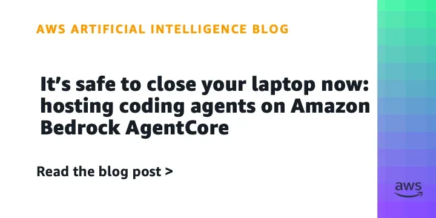
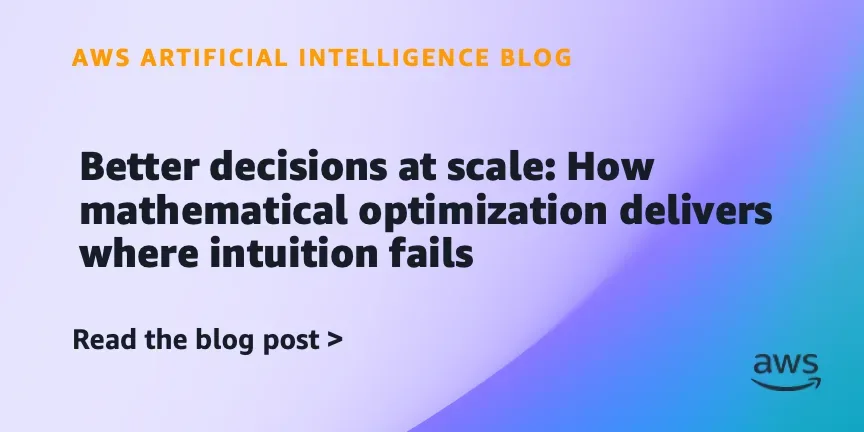

РоссияКод
Обход блокировок Claude Code и Antigravity из России
Квест по настройке Claude Code и Antigravity для работы из России: от proxychains до запуска на VPS.
Habr AI
11 июн. 2026 г.Практические материалы для разработчиков: туториалы, библиотеки, фреймворки и кейсы применения ИИ в разработке.
277 материалов
Квест по настройке Claude Code и Antigravity для работы из России: от proxychains до запуска на VPS.

Фаундер ITSalt собрал скилл, который сам пишет промпты по 10 блокам — и проверяет их через 18 тестов

Fable 5 против Opus 4.7: кто лучше учится на ошибках в агентных циклах — цифры из экспериментов Anthropic

ИИ-агенты закрывают задачи за минуты. Что осталось делать разработчику?

В EXANTE продакт-оунер превратила недельный ресёрч в дневной черновик с помощью ИИ — но без ручной проверки не обходится.

Почему RAG ломается в продакшене и как это починить конкретной инженерной работой

Mustash — open-source утилита для создания умных плейлистов из избранного Spotify с настраиваемыми правилами.

Почему «Финист — ясный сокол» объясняет prompt injection лучше любого курса

Как объединить слои нейросети через межбатчевую связь и приблизиться к биологическим нейронам?

Один промпт, ноль строк кода вручную — и готовая игра с моралью про ИИ-журналистику

LLM-агенты могут выполнять код — но это опасно. Разбираем, как защитить систему с помощью песочницы.

Тестирование GigaChat в реальном агентном workflow: сложности с tool calling, streaming и протокольной совместимостью.

Один снимок страницы в Playwright MCP съедает 38 831 токен — больше, чем вся схема GitHub MCP

Дефицит 50 тысяч безопасников — и месяцы отказов. Что сломалось в найме и как с этим жить

Amazon делится опытом ИИ-нативной разработки: 20-кратный рост продуктивности, 76 дней вместо 18 месяцев, и три проверенных подхода.

Рабочий проект переписали с нуля — не из-за багов, а потому что команда разучилась думать самостоятельно

SEO-топ и источники нейросетей почти не пересекаются — исследователи вскрыли трафик и объяснили почему

LLM в корпоративной шине: как redb.Route 3.1.1 убирает отдельную ИИ-инфраструктуру

3D-подруга в браузере за ноль рублей: как устроен аватар на Gemini API и Three.js

Как 1С научили работать с ИИ: MCP-сервер, права доступа и агент прямо в интерфейсе
![Дообучение FLUX.2 [klein] за час: LoRA на одной видеокарте с нуля до Gradio-приложения](../../../../assets/images/e477a47d5ab89636982fe46b.webp)
Как дообучить FLUX.2 [klein] под свой стиль за $0.50 и один час — пошаговый разбор

Claude пишет 80% кода Anthropic, PyPI пропал в России, GitHub тонет в ИИ-PR — главное за неделю

AWS упрощает оптимизацию ядер: ИИ-агенты для Trainium пишут, отлаживают и профилируют код без ручной настройки.

AWS представила шаблон ИИ-помощника для ремонта техники на Bedrock AgentCore с RAG и памятью.

NVIDIA Confidential Computing защитит данные пользователей Apple при облачных вычислениях на Google Cloud.

Как AWS и NVIDIA объединили SageMaker ИИ и Isaac Lab для масштабирования RL-обучения роботов.

Amazon Quick и New Relic выпустили агента для инцидент-менеджмента с интеграцией в Asana
AWS научила Amazon Bedrock держать ИИ-запросы внутри ЕС — как это работает и зачем нужно GDPR

Закройте ноутбук — агент продолжит работу в облаке AWS. Как устроен AgentCore Runtime

Как AWS решает задачи, где ML даёт «вероятно», а бизнесу нужно «точно»